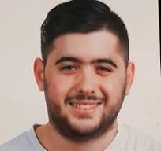

XAVIER MÁRQUEZ
¡Hola! Soy Xavier Márquez, un estudiante de 3r curso de Ingeniería Informática de 26 años. Cuando no estoy inmerso en el mundo de la programación y la tecnología, me encuentro trabajando como maquinista en el Cremallera de Vall de Núria. Mi fascinación por la informática se combina con mi amor por el mundo de los videojuegos, el fútbol y la magia tres de mis pasiones que me mantienen equilibrado entre la tecnología y la diversión. ¡Bienvenido a mi mundo!